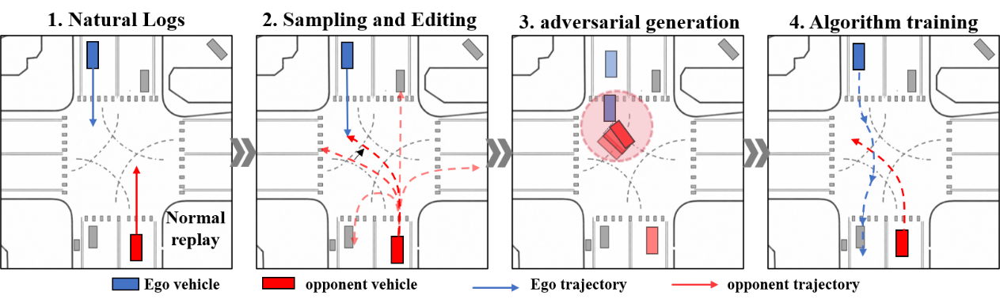
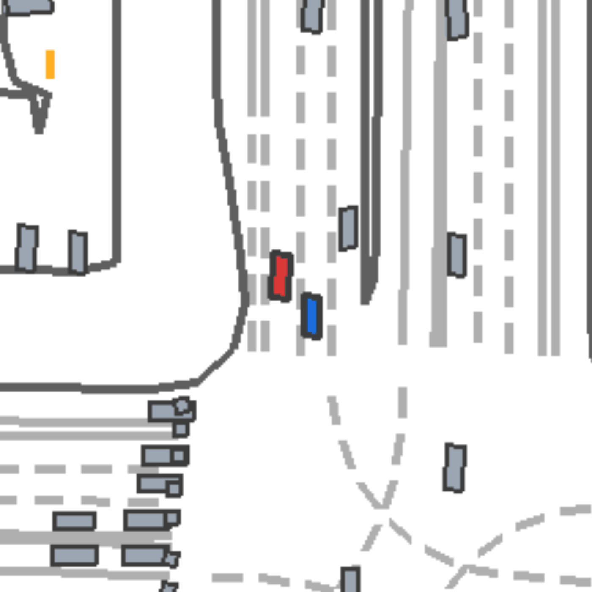
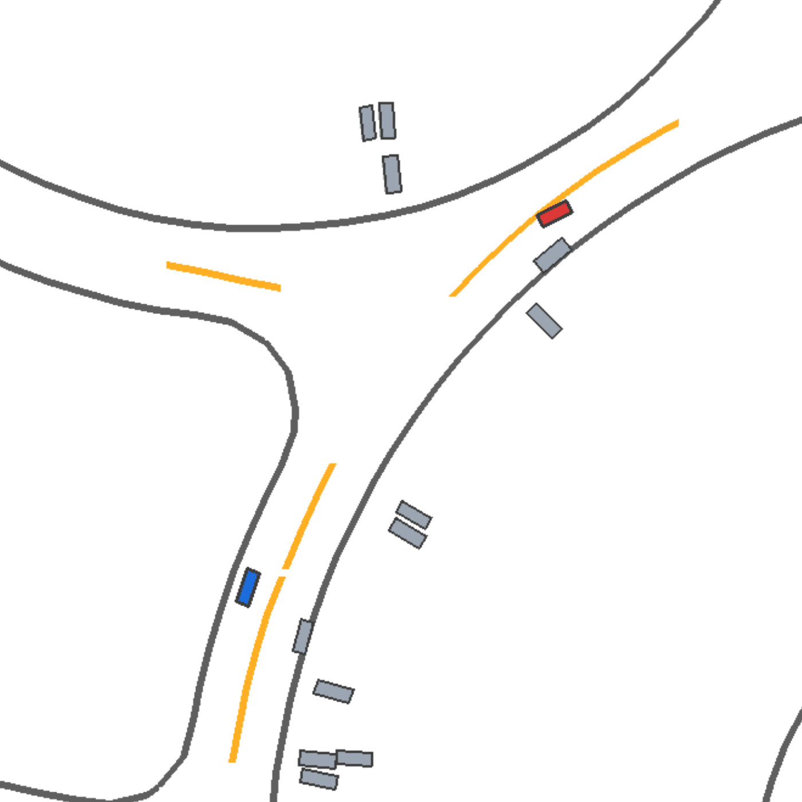

02 / SCENARIO LOOP
极端场景生成与训测闭环
围绕当前驾驶策略的薄弱决策边界，生成具备明确交互压力的场景，并将测试失效反馈到训练过程，提升长尾风险覆盖。

决策边界引导生成
从真实或记录场景出发，调整周边交通参与者的行为与交互时序，在交通规则和物理可行性约束下形成有针对性的测试场景。
测试反馈与持续更新
闭环测试识别碰撞风险、策略犹豫及不稳定动作等关键失效片段，将其回流训练。随着策略能力变化，场景库持续补充新的高价值样本。
SCENARIO COMPARISON
对抗场景生成可视化
记录场景与针对性生成场景的两组对比。
场景一

场景二
